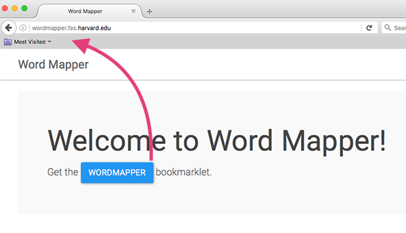
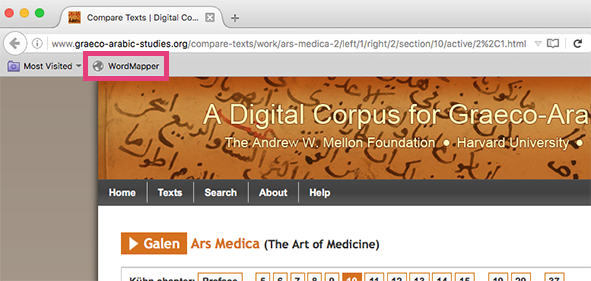

How to install Word Mapper
- Make sure your browser's Bookmarks Bar is visible.
- Install Word Mapper by dragging WordMapper to your Bookmarks Bar.
- Once you have the bookmarklet, you can then navigate to a project, such as Ars Medica 10, and click the bookmarklet to activate Word Mapper.
- You should now see the Word Mapper toolbar appear at the top of your page.

